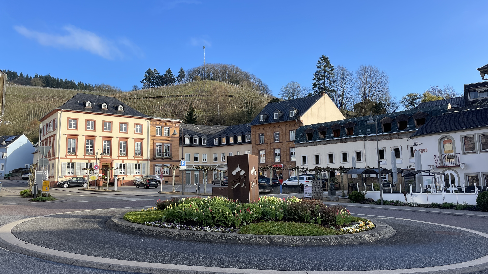

So erreichst Du mich – und so findest Du mich
Louisa Breyer – Intuitionsraum
Psychologisch-humanistische Prozessbegleitung im Intuitionsraum
Am Fruchtmarkt 2, 54439 Saarburg
E-Mail:
Telefon: 06501/987 9090
Impulse, Gedanken und Einblicke findest Du auch auf Instagram.

Wissenswertes
Ich begleite Menschen aus Saarburg und der Region entlang Saar und Mosel – unter anderem aus Konz, Zerf, Nittel, Trassem, Serrig, Trier und Mettlach. Auch aus der angrenzenden Grenzregion Luxemburg, etwa aus Grevenmacher, Wasserbillig oder Mertert, bist Du herzlich willkommen.
Ich freue mich, von Dir zu hören: ob mit einer konkreten Frage, einem Anliegen oder einfach aus Neugier.